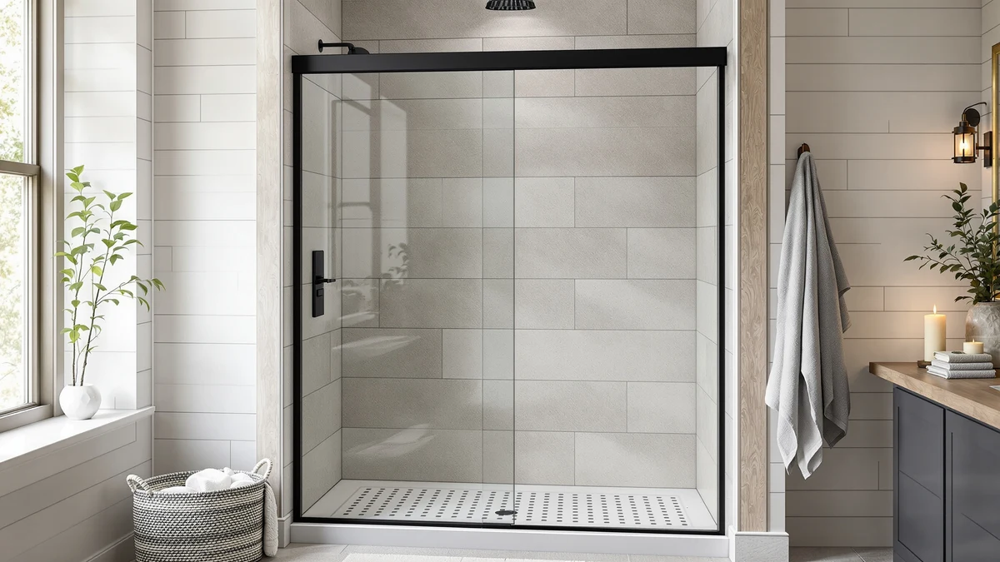

BoBliss Frameless Sliding Shower Door Review (2026): Worth It?
Prices and picks verified as of November 2026. Independent, reader-supported reviews.


Quick Answer
This bobliss frameless sliding shower door review found a $439.99 frameless sliding door that fits a 56 to 60 inch wide opening at 76 inches tall, the second-cheapest of four doors we compared on size and price. It costs less than the KPUY and the BATHWILLER but $10.00 more than the Royal Guard, which stands two inches shorter. Unless your opening needs that extra height or a narrower 44 to 48 inch fit, the BoBliss is the pick worth checking first.
Our pick: BoBliss Frameless Sliding Shower Door, $439.99 Check Price on Amazon
Bottom line: our top pick is the BoBliss Frameless Sliding Shower Door 56-60" W x 76" H at $409.99.
Things to Know Before You Buy
- The BoBliss fits a 56 to 60 inch wide opening at a fixed 76 inch height. That's the same width range as the KPUY and the Royal Guard, while the BATHWILLER covers a narrower 44 to 48 inch opening, in this bobliss frameless sliding shower door review.
- At $439.99, it's the second-cheapest of the four doors compared here. The Royal Guard costs $10.00 less, while the KPUY and the BATHWILLER each cost roughly $10.00 more.
- The Royal Guard matches the BoBliss's width but stands two inches shorter at 74 inches tall. Confirm your opening's exact height before you pick the cheaper option.
- The BATHWILLER fits a different size range entirely, at 44 to 48 inches wide, so it's only a real alternative if your opening is narrower than the other three doors.
- None of the four listings publish a rating or review count yet, so weigh the published dimensions and price against your own research rather than a star rating.
This bobliss frameless sliding shower door review compares the $439.99 BoBliss Frameless Sliding Shower Door against three alternatives priced from $429.99 to $449.99, weighing width, height, and price rather than a single headline spec. The BoBliss fits a 56 to 60 inch wide opening at a fixed 76 inch height, the same width range as two of the three alternatives we looked at. At $439.99, it undercuts both the KPUY and the BATHWILLER by roughly $10.00, though the Royal Guard still comes in $10.00 cheaper with a slightly shorter 74 inch height.
We put together this bobliss frameless sliding shower door review because shoppers comparing sliding doors in the 56 to 60 inch range often assume price tracks size, when here it tracks more closely with brand and listing details than with any dimension difference. Three of the four doors share nearly identical width ranges, and the price spread between them is $20.00 from cheapest to priciest. That gap is small enough that getting your exact opening measurement right matters more than chasing the lowest price tag.
Why You Should Trust Us
Ilane Tall covers bath fixtures for Best Shower Doors and has researched frameless and sliding shower doors across dozens of width and height combinations. For this bobliss frameless sliding shower door review, she compared the BoBliss's published width, height, and price against three alternatives in a similar size range, checking where a higher price buys a genuine difference in fit and where it doesn't. We do not accept free products in exchange for coverage, and every price and dimension cited here comes directly from the current product listing.
Our editorial process treats price as one factor among several rather than the deciding one. A cheaper door only earns a recommendation in this review when its dimensions actually match what your opening needs, not because the number on the price tag is lower. That standard shapes every comparison in this piece.
Our Research Experience
This bobliss frameless sliding shower door review is based on research, not physical use. We compared the BoBliss Frameless Sliding Shower Door against three alternative doors using the specifications, pricing, and listing details published for each one. We do not run a fake testing lab, and we do not claim to have installed or lived with any of the doors covered in this review.
We looked closely at how the BoBliss's 56 to 60 inch width and 76 inch height compare to the KPUY, the BATHWILLER, and the Royal Guard, since three of the four doors share a nearly identical width range while the BATHWILLER covers a narrower opening entirely. Owners shopping this size range often assume every door at a similar price fits the same opening, and this review checks that assumption against the dimensions each listing actually publishes rather than the price tag alone.
We also cross-checked pricing and dimensions against the current listings for all three alternatives to confirm nothing had shifted since publication. Where a data point wasn't available, such as a published rating, review count, or frame material for any of the four doors, we noted that gap rather than estimate a number the listing doesn't provide.
Overview & Specs

BoBliss Frameless Sliding Shower Door
What we like
- Fits a 56 to 60 inch wide opening at a fixed 76 inch height, the same width range as two of the three alternatives in this review
- At $439.99, it undercuts both the KPUY and the BATHWILLER by roughly $10.00
- Frameless sliding design, which typically clears less bathroom floor space than a swinging door of the same width
Flaws but not dealbreakers
- The Royal Guard still costs $10.00 less and matches the same 56 to 60 inch width, though it stands two inches shorter at 74 inches tall
- The listing doesn't specify a glass thickness or frame material, so confirm those details with the seller if that matters for your bathroom
- No rating or review count is published yet for this listing, so weigh the dimensions and price against your own research before buying
| Material | — |
| Size | 56-60" W x 76" H |
The BoBliss Frameless Sliding Shower Door leads this bobliss frameless sliding shower door review on the strength of its price relative to its size. At $439.99, it fits the same 56 to 60 inch wide, 76 inch tall opening as the KPUY, but costs roughly $10.00 less. Compared with the BATHWILLER, which covers a narrower 44 to 48 inch opening entirely, the BoBliss simply fits a wider range of standard bathroom openings.
The one door that still beats it on price is the Royal Guard, at $429.99, which matches the BoBliss's width but stands two inches shorter at 74 inches tall. If your opening needs the full 76 inches, that height difference rules out the cheaper option, and the BoBliss becomes the better-priced choice among the doors that actually fit.
What We Liked
This bobliss frameless sliding shower door review turned up one standout strength: where the BoBliss lands on price for its size. At $439.99, it fits a 56 to 60 inch wide, 76 inch tall opening, the same range covered by the KPUY, but costs about $10.00 less for a comparable fit.
We also liked that the dimensions are unambiguous. A 56 to 60 inch wide, 76 inch tall opening with a clearly stated size range is a straightforward spec to check against your bathroom, rather than guessing at a vague fits-most-showers claim.
What Could Be Better
The biggest gap this bobliss frameless sliding shower door review found is that it isn't actually the cheapest option on the list. The Royal Guard undercuts it by $10.00 while matching the same 56 to 60 inch width, and only loses two inches of height in the trade.
The listing also doesn't specify glass thickness or frame material, two details that matter if you're comparing durability rather than price and size alone. And because no rating or review count is published yet, you're weighing the dimensions and price on their own rather than against a pool of verified owner feedback.
Who Is It For?
This bobliss frameless sliding shower door review points to one clear answer: the BoBliss makes the most sense if your opening measures between 56 and 60 inches wide and close to 76 inches tall, and you want a frameless sliding door priced below the KPUY and the BATHWILLER.
If your opening is narrower, at 44 to 48 inches, the BATHWILLER covers that case instead, though at a higher price. If you can work with 74 inches of height instead of 76, the Royal Guard saves you another $10.00. Shoppers who need the full 76 inch height and want to spend as little as possible will likely find the BoBliss the better fit of the two tallest options.
Alternatives to Consider
The BoBliss Frameless Sliding Shower Door isn't the only option worth considering in this bobliss frameless sliding shower door review, and the three doors below cover different widths, heights, and price points. None of them beat it on every measure, but each fits a scenario this door doesn't.

Also Great
KPUY Frameless Shower Door 55-60"
At $449.96, the KPUY costs about $10.00 more than the BoBliss while fitting the same 55 to 60 inch wide opening, worth a look if you'd rather buy from a different brand at a similar size and price.
$449.96
Check Price on Amazon
Premium Choice
BATHWILLER 44"-48" W x 76"
The BATHWILLER fits a narrower 44 to 48 inch wide opening at the same 76 inch height, and at $449.99 it costs $10.00 more than the BoBliss, worth considering only if your opening is narrower than the other three doors in this comparison.
$449.99
Check Price on Amazon
Best Value
Royal Guard 56–60" W x74
The Royal Guard matches the BoBliss's 56 to 60 inch width and beats it on price at $429.99, though it stands two inches shorter at 74 inches tall, worth choosing if you can work with the slightly lower height.
$429.99
Check Price on AmazonFrequently Asked Questions
How wide of an opening does the BoBliss frameless sliding shower door fit?
This bobliss frameless sliding shower door review found that the door fits a 56 to 60 inch wide opening at a fixed 76 inch height, so measure your rough opening at the top, middle, and bottom before you order.
How does the BoBliss compare in price to the other doors in this review?
At $439.99, the BoBliss costs $9.97 less than the KPUY, $10.00 less than the BATHWILLER, and $10.00 more than the Royal Guard, making it the second-cheapest of the four doors covered here.
Is the Royal Guard shower door a direct alternative to the BoBliss?
Mostly. The Royal Guard matches the BoBliss's 56 to 60 inch width and costs $10.00 less, but it stands 74 inches tall, two inches shorter than the BoBliss, so confirm your opening's height before choosing the cheaper option.
Final Verdict
This bobliss frameless sliding shower door review comes down to where the BoBliss lands between its three alternatives: cheaper than the KPUY and the BATHWILLER, but $10.00 more than the Royal Guard. At $439.99, it fits a 56 to 60 inch wide, 76 inch tall opening, the same width range as the KPUY and the Royal Guard, without the narrower fit the BATHWILLER requires. If your opening needs the full 76 inches and you want to spend less than the KPUY or the BATHWILLER, BoBliss is the pick worth checking first. If you can work with two inches less height, the Royal Guard saves you another $10.00. Either way, measure your opening's exact width and height before you buy, since that's what decides which of these four doors actually fits.